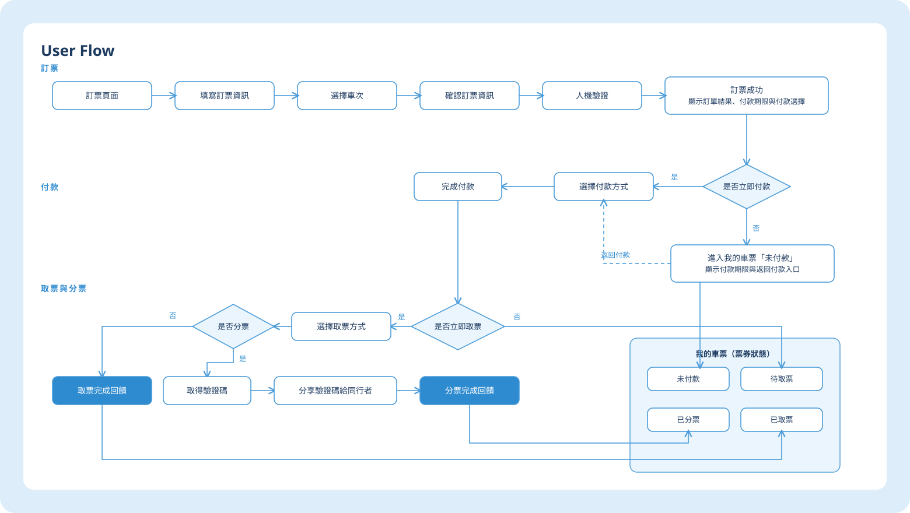

台鐵 e訂通
重新梳理查詢、訂票、付款與票券管理流程，改善功能入口辨識、任務銜接與操作狀態回饋。
背景與目標
台鐵 e訂通整合查詢、訂票、付款、取票與分票等任務，但主要入口分散，資訊層級、流程銜接與狀態提示不夠清楚，使用者容易在不同功能間反覆尋找，也不易確認操作結果與下一步。基於公開評論盤點與原 App 任務操作觀察，本次 redesign 聚焦於重整主要入口、串接訂票與票券管理流程，並補足班次、訂單與票券狀態及下一步提示。
前期研究概覽
2023 年研究時
2023 年研究時
重複出現的問題
並完成相同任務
商店評分用於說明研究當時的產品現況；具體問題則以公開評論內容與任務操作觀察作為判斷依據。
問題範圍與改版方向
挑戰與洞察
為確認個人使用經驗是否也出現在其他使用者的訂票情境中，我先整理 App Store 與 Google Play 的公開評論及原 App 功能流程，再邀請 4 位搭乘頻率與官方 App 使用習慣不同的參與者，了解其乘車與訂票經驗，並操作相同任務：查詢指定車次、完成訂票、選擇稍後付款與取票。桌面研究用於盤點問題方向；訪談與任務操作則用於理解這些問題如何出現在實際流程中。
公開評論中的問題方向
我將 2023 年研究期間可見的公開評論依問題內容歸納為五類，作為後續訪談與任務操作的觀察方向。這項整理用於辨識問題範圍，未進行完整的評論抽樣與統計推論。
- 查詢、訂票與付款之間銜接不連貫
- 列車資訊與訂單狀態不易掌握
- 訂票入口與查詢方式不夠清楚
- 取票、分票與乘車憑證之間的關係不易理解
- 部分票務需求仍需切換其他管道
四位研究參與者的使用差異
四位參與者皆完成相同任務，差異主要在搭乘頻率、訂票熟悉度與官方 App 使用習慣。這些背景用於理解不同的使用情境，後續分析仍以實際訪談與任務操作內容為主。
參與者背景僅用於說明使用情境差異，研究分析以實際訪談與任務操作內容為主。
相同任務中的操作與理解
4 位參與者皆操作原 App 的相同任務：查詢指定車次、完成訂票、選擇稍後付款與取票。我將任務操作路徑與訪談內容整理為 Journey Map，比較參與者如何尋找功能、理解頁面資訊，以及確認訂單與票券狀態。
代表性任務歷程
以 Alston 的任務歷程為例，我將台北至板橋的查詢、訂票、稍後付款與取票串成完整路徑，檢視不同任務階段的入口、資訊說明與下一步是否連貫。
其中，區間車無法於 App 內購票時，介面未同步說明適用票種與替代購票方式；完成訂票後，付款入口與後續操作也分散於不同位置。這些情況顯示，問題不只存在於單一畫面，也涉及不同任務之間的資訊與操作銜接。

研究收斂：三個需要優先處理的問題
- 入口不易辨識｜公開評論與訪談內容皆涉及功能入口難找，以及入口名稱與位置不容易理解等問題
- 任務銜接中斷｜查詢、訂票、付款、取票與分票分散於不同入口，使用者需要重新判斷接下來應前往哪個位置操作
- 狀態與下一步不清楚｜完成訂票、付款或取票後，操作結果、票券狀態與後續入口沒有集中呈現
設計決策
前一階段將問題收斂為入口、流程與狀態三個層次，後續設計因此依序處理三件事：讓主要任務更容易找到、讓查詢至取票的流程更連貫，並在訂單與票券狀態改變時，清楚呈現操作結果與下一步。
核心取捨｜縮短流程，還是保留關鍵確認？
減少確認與結果畫面可以縮短流程，但使用者可能無法確認訂單、付款或票券是否成立，也較難判斷下一步
僅在會改變訂單、付款或票券狀態的節點保留確認，並明確呈現操作結果與下一步
部分流程因此增加確認或結果畫面，換取更明確的操作結果、票券狀態與後續操作。
四項關鍵設計決策
以下四項決策分別回應入口、流程與狀態三個問題層次，並進一步定義首頁架構、訂票流程、取票與分票任務，以及票券狀態的呈現方式。
重整主要任務入口
查詢、訂票與票券管理入口分散，使用者不易判斷應從哪裡開始串接查詢、訂票與付款
車次查詢、訂票與付款分散於不同入口；完成訂票後，使用者仍需另外尋找付款位置區分取票與分票任務
取票與分票的目的、操作對象及所需資料不同，但原有入口與流程不易清楚區分兩項任務補足確認、結果與票券狀態
訂票、付款或取票完成後，操作結果、票券狀態與後續入口缺少集中呈現以主要任務重整資訊架構
將「我的車票、訂票、列車動態、旅遊資訊」整理為底部導覽的四個主要入口，讓使用者能依任務快速找到對應功能；並透過 Functional Map 重新梳理各入口下的功能層級與歸屬
底部導覽以四項主要任務作為第一層入口
查看完整 Functional Map

以 User Flow 定義任務分支與票券狀態
以 User Flow 串接訂票、付款、取票與分票的主要流程，並定義「是否立即付款」「是否立即取票」與「是否分票」等關鍵分支，同時整理未付款、待取票與已取票等票券狀態，以及各狀態下可執行的下一步

Wireframe｜將設計決策落到完整任務流程
Wireframe 串接查詢、訂票、付款、取票與分票的主要畫面，用於確認入口配置、流程銜接、狀態提示與下一步在不同任務節點的呈現方式。

易用性測試
我邀請 2 位經常搭乘台鐵的使用者，依序完成查詢指定車次、訂票、選擇稍後付款與取票，兩位皆完成任務，過程中未觀察到影響任務進行的明顯停頓或理解問題，並且兩位使用者皆表示新版比現行 App 更容易理解與操作，因此本輪未再調整主要流程。
介面設計
介面以台鐵既有藍色識別為基礎，重新整理字級、色彩、按鈕、表單與票券狀態。以下畫面分別對應主要入口、訂票流程與狀態回饋。
介面規範
整理主要色彩、字級、按鈕、輸入欄位與狀態元件，作為訂票、付款與票券管理畫面的共用規則。

首頁與訂票
底部導覽保留我的車票、訂票、列車動態與旅遊資訊四個主要任務；會員中心維持獨立入口。常用行程可以快速帶入訂票資訊。

訂票流程
在同一流程完成訂票資訊、車次選擇、確認與訂票結果，並在成功後提示付款期限與下一步。

票證資訊
依票券狀態優先顯示付款期限、乘車資訊與目前可執行的操作。

取票與分票
將取票與分票拆為清楚的任務節點；分票提供驗證碼複製與分享，並在完成後顯示結果。

付款
區分立即付款與稍後付款，清楚顯示訂單狀態、付款期限與返回付款的入口。

我的車票
依未付款、待取票、已取票與已分票整理票券，讓目前狀態與下一步操作容易辨識。

列車動態
以方向、車種、列車位置與更新時間呈現動態資訊。本案未串接真實列車資料，畫面為資訊呈現概念。

旅遊票券
依旅遊票券與景點分類內容，並提供收藏與評價入口。這是既有服務的延伸探索，不是本次訂票流程改善的核心範圍。